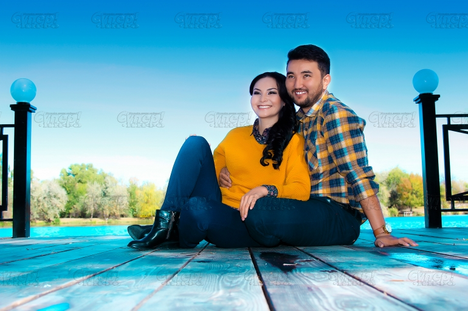

SUPER.KG порталынын Түз эфиринин кезектеги коногу "Заманыбыздын супер алып баруучусу" наамынын ээси Нурзат Токтосунова жана анын жолдошу, шоумен Максат Надырбеков. Кандай гана иш-чара болбосун элди башкара билген, өз мезгилинин мыкты алып баруучулары азыркы тапта жаштарга туура багыт көрсөтүп, таланттуу алып баруучуларды даярдай турган мектепти жетектеп келишет.
Түгөйлөр 2016-жылдын май айында баш кошушкан. Үйлөнүү тойго 400 адам чакырылып, алардын 80 пайызын белгилүү ырчы-чоорчулар түзгєн.

"Максат жашоомдо пайда болгондон бери жыргап калдым. Эркектин ийини баары бир эркектин ийини. Анын жашоодо ролу аябай чоң. Мендеги айрым жүктєрдү кадимкидей алып койду. Мисалы, тойго чейинки даярдыктын баарын Максат кылат. Оюндарды дагы өзү уюштуруп, жадакалса соңунда менин көйнөгүмдү дагы алмаштырып, жетелеп кетет. Артыкчылыгынан башка кемчилигин көрө алган жокмун", - дейт Токтосунова жолдошу тууралуу.
Түгөйлөр тасмаларда да роль жаратууга жетишкен. Нурзат Токтосунова улуу манасчы Саякбай Каралаевдин өмүр жолун баяндаган "Саякбай" тасмасында айыл башчысынын образын аткарса, Максат Надырбеков "Мегатой", "Эл укпасын" жана башка тасмаларда роль жараткан.
Таланттуу түгөйлөргө арнаган жылуу сөздөрүңүз же мыкты суроолоруңуз болсо +996 557 75 63 63 WhatsApp номери аркылуу жиберсеңиз болот. Ошондой эле түз эфир жүрүп жатканда "Соңку кабар" аркылуу комментарий жазып дагы жооп алсаңыздар болот. Алып баруучулар суроолорго 10-январь күнү саат 15:00дө баштала турган түз эфир учурунда жооп беришет.
Эске салсак, суроолор редакция тарабынан иргелет. Мааниси окшош, кайталанма суроолор эфирге чыгарылбайт.
жаңыланды 13:02 09-01-2018
кошулду 10:32 08-01-2018
Автор:Айзада Тураркулова